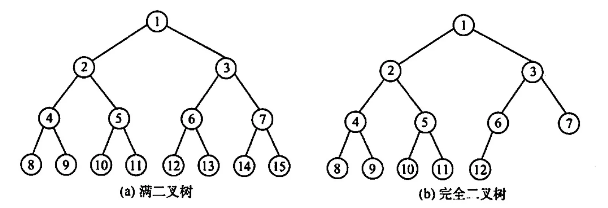

分支结点：$i≤\lfloor \frac{n}{2} \rfloor$
二叉排序树
平衡二叉树：左右子树深度不超过一
二叉树的性质：
非空二叉树叶子结点树n0 = 度为2的结点数n2 + 1
$$
n_0 = n_2+1
$$
非空二叉树第k层上最多有2^k个结点
i的左孩子为2i
i的右孩子为2i+1
结点i的深度 = $\lfloor \log_2i \rfloor+1$
二叉树的顺序存储
i的左孩子是2i
不是二叉树不能用顺序存储
二叉树的链式存储
n个结点的二叉链表有n+1个空链域 「n+1 = 2n-(n-1)」
【答案】：C
【答案】：A
【答案】：B
【答案】：B
【答案】：C
【答案】：D -> C
【答案】：C
【答案】：C
【答案】：C
已知一棵完全二叉树的第6层（设根为第1层）有8个叶结点，则完全二叉树的结点个数最少是（）。
A.39
B. 52
C. 111
D. 119
【答案】：A
若一棵深度为6的完全二叉树的第6层有3个叶子结点，则该二叉树共有（ ）个叶子结点
A. 17
B. 18
C. 19
D 20
【答案】：A
一颗完全二叉树上有1001个结点，其中叶结点的个数是（ ）
A. 250
B. 500
C. 254
D. 501
【答案】：D
若一颗二叉树有126个结点，在第7层（根结点在第1层）至多有（ ）个结点。
A. 32
B. 64
C. 63
D. 不存在第7层
【答案】：C
一棵有 124 个叶子结点的完全二又树，最多有（ ）个结点。
A. 247
B. 248
C. 249
D. 250
【答案】：A -> B，因为加一个左孩子，叶子结点个数不变！
一棵有n个结点的二叉树来用二叉链存储结点，其中空指针为（ ）
A. n
B. n+1
C. n-1
D. 2n
【答案】：B
在一棵完全二叉树中，其根的序号为1，（ ）可判定序号为p和q的两个结点是否在同一层。
A. $\lfloor \log_2p \rfloor$ = $\lfloor \log_2q \rfloor$
B. $\log_2p$ = $\log_2q$
C. $\lfloor \log_2p\rfloor+1$ = $\lfloor \log_2q \rfloor$
D. $\lfloor \log_2p\rfloor$ = $\lfloor \log_2q \rfloor+1$
【答案】：A
假定一棵三叉树的结点数为50，則它的最小高度为（ ）。
A. 3
B. 4
C. 5
D. 6
【答案】：C
已知一採有2011 个结点的树，其叶结点个数是116，该树对应的二叉树中无右孩子的结点个数是（ ）。
A. 115
B. 116
C. 1895
D. 1896
【答案】：D
对于一棵满二叉树，共有n个结点和m个叶子结点，高度为h，则（ ）。
A. n=h+m
B.n+m=2h
C.m=h-1
D. n=2^h -1
【答案】：D
【2009 统考真题】已知一棵完全二叉树的第6层（设根为第1层）有8个叶结点，则该完全二叉树的结点个数最多是(）
A. 39
B. 52
C. 111
D. 119
【答案】：A -> C。第六层可以全满，然后通过接第七层，让第六层只剩8个叶子结点！
【2011 統考真题】若一棵完全二叉树有768个结点，则该二叉树中叶结点的个数是(）.
A. 257
B. 258
C. 384
D. 385
【答案】：C
【2018 统考真题】设一棵非空完全二叉树T的所有叶结点均位于同一层，且每个非叶结点都有2个子结点。若T有k个叶结点，则T的结点总数是（ ）。
A. 2k-1
B. 2k
C. k^2
D. 2^k - 1
【答案】：A
【2020 统考真题】对于任意一棵高度为 5且有10个结点的二叉树，若来用顺序存储结构保存，每个结点占 1个存储单元（仅存放结点的数据信息），则存放该二叉树需要的存储单元数量至少是（）.
A. 31
B. 16
C. 15
D. 10
【答案】：A